|
INFO505 Programmation C
|
Ce TP est un échauffement pour les TPs ultérieurs, afin que vous retrouvez vite vos réflexes sur le C. Passez vite sur les éléments que vous maitrisez. Les points importants ci-dessous sont l'utilisation de tableaux à deux dimensions (puissance 4, génération de terrain), les structures et pointeurs vers structure (le logo), et l'utilisation d'un débuggeur.
Environnements de développement C. Il y a plusieurs choix possibles. On peut:
Anjuta, Eclipse, Visual studio, etc.emacs, vim, sublime) et les lignes de commande pour compiler (gcc ou faire des fichiers Makefile).Cette section vise uniquement à vous faire comprendre comment un exécutable C communique avec le terminal d'où il est lancé.
Afin de forcer la compilation avec le maximum de sécurité et de tests possible, on va créer un alias pour appeler le compilateur avec les bonnes options. On écrira donc sous votre shell.
[you] alias mygcc='gcc -Wall -pedantic -g -std=c99' [you]
Du coup, toute compilation avec mygcc vérifie que vous écrivez un code assez propre compatible C99.
Ecrivez le programme C suivant (essai1.c)
Compilez-le avec votre commande mygcc. La forme ci-dessous crée directement l'exécutable.
Cela crée l'exécutable essai1. Si vous l'exécutez, il ne fait rien, ce qui est attendu. On peut afficher la valeur de retour du programme sous Linux avec la commande
On vérifie que le return de notre programme peut prendre une autre valeur. Mettez 10 à la place de 0. Recompilez, réexécutez et observez la valeur de retour.
On va observer maintenant les paramètres en entrée avec le programme C suivant (essai2.c)
Compilez puis exécutez-le en donnant des paramètres sur la ligne de commande (ici: toto titi tata 10 11 12).
On vérifie ainsi comment le programme C récupère les paramètres donnés sur la ligne de commande Linux.
argv sont des chaînes de caractères. Par exemple ci-dessus, argv[ 4 ] pointe vers 3 caractères consécutifs en mémoire ('1', '0', '\0').On va implémenter l'algorithme qui détermine si une année est bissextile:
L'année n est bissextile si et seulement si n est divisible par 4 et n n'est pas divisible par 100, ou alors n est divisible par 400.
On peut commencer par faire un programme qui demande interactivement à l'utilisateur d'entrer une année et lui répond si elle est bissextile ou non.
scanf pour demander à l'utilisateur de saisir un entier sous la forme: Dans un deuxième temps, on peut modifier le programme précédent pour que l'année soit récupérée comme argument sur la ligne de commande.
argv (une chaîne de caractère) en un entier, via la fonction atoi (définie dans stdlib.h).Enfin on peut implémenter une fonction qui teste si une année est bissextile ou non et l'utiliser dans un programme qui compte le nombre d'années bissextiles entre deux dates. Le prototype des fonctions seront de la forme:
On appelera le programme ainsi:
Le but est de se familiariser avec un debugger, afin de plus facilement trouver ses bugs et les corriger. Normalement vous devez avoir au moins gdb, xxgdb et ddd installés. Les deux derniers sont un peu plus user-friendly que gdb.
Un debugger permet (entre autres) d'executer un programme en l'arrêtant à un point donné, d'afficher les valeurs des variables locales à un moment donné, d'afficher les paramètres donnés à une fonction, d'afficher l'état du programme lors d'un crash...
-g en compilant un programme pour le debugger! Le debugger peut fonctionner sans, mais sera très limité.Voilà un programme avec une fonction calculant les termes de la suite de Fibonacci et les affichant, que l'on appellera fibo.
Compilez-le (sans oublier l'option -g), puis lancez-le avec un débuggueur, par exemple avec la commande ddd fibo.
[you] mygcc -g fibo.c -o fibo [you] ddd fibo
Vous pouvez executer le programme avec run, et tout devrait fonctionner normalement, les valeurs devraient s'afficher dans la console du debugger.
Placer un breakpoint à la ligne 15, celle du printf. Cliquer dessus (à un endoit tel qu'il soit bien marqué fibo.c:15 en haut de l'écran et pas printf ou autre) puis sur le bouton break. Vous pouvez également utiliser la console gdb disponible (la commande break fibo.c:15 rajoute le breakpoint). Si tout va bien, un symbole stop est placé sur la ligne.
Lancer le programme avec run, il devrait s'arrêter au breakpoint. Pour lui dire de reprendre son execution, cont devrait le lancer jusqu'à ce qu'il rencontre de nouveau le breakpoint.
Pour afficher les variables locales, Data -> Display local variables et Data -> Display local arguments.
Vous devriez pouvoir tracker la valeur de i. Retirer le breackpoint de la ligne du printf, puis en mettre aux deux return de la fonction fibo. Voir le changement de variables locales et des arguments affichés.
On peut dans Status -> Backtrace afficher la "backtrace", i.e. la pile d' éxecution, qui indique la fonction dans laquelle on se trouve, depuis quelle fonction cette fonction a été appelée et ainsi de suite...
Par exemple, en faisant tourner ce programme on peut avoir la fonction fibo appelée depuis fibo, elle même appelée depuis fibo appelée depuis main. Avec up et down, on peut parcourir la backtrace et voir les variables locales à l'emplacement de ces appels de fonction. On devrait par exemple voir que chaque appel de fibo dans la backtrace se fait avec un argument différent et dans la 'appel de fibo depuis main on peut voir la valeur de i.
A partir de maintenant, n'hésitez pas à lancer vos programmes depuis un débuggeur afin d'identifier des erreurs, vérifier que tout ce passe comme vous le voulez dans vos boucles etc...
On vous donne le code suivant, qui est censé implémenter un tri à bulle:
Si vous le compilez et l'exécutez, vous allez voir qu'il "plante" après le premier affichage (segmentation fault). Recompilez bien le programme avec l'option -g pour le débuggeur (par exemple en utilisant mygcc). Exécutez-le pas à pas avec un débuggueur et observez où et quand se produit l'erreur. Corrigez le programme pour qu'il affiche plutôt:
[you] ./a.out 83 86 77 15 93 35 86 92 49 21 62 27 90 59 63 26 40 26 72 36 15 21 26 26 27 35 36 40 49 59 62 63 72 77 83 86 86 90 92 93
Le but de cet exercice est de programmer un jeu de Puissance 4 pour deux joueurs.
On définit le type Jeu comme un type tableau de caractères de 6 lignes et 7 colonnes.
Les cases vides seront représentées par le caractère '.', celles occupées par un pion du joueur 1 par 'x' et 'o' pour le joueur 2.
En utilisant le code suivant, vous pouvez compléter l'action init qui initialise la grille en la remplissant de '.', et l'action affiche qui affiche l'état courant de la grille, puis les tester.
Le but est d'obtenir quelque chose qui ressemble à ceci :
Ensuite vous pouvez écrire une action joue qui met le tableau p à jour lorsque le joueur j joue dans la colonne i.
Vous pouvez tester tout cela en modifiant le main précédent. Par exemple lors de l'exécution de ce code...
... on attend le comportement suivant:
En réalité on se rend compte qu'on a besoin d'une fonction n_est_pas_pleine qui teste si il reste une place dans une colonne donnée.
L'écrire de manière à ce qu'elle soit utilisable avec le main du fichier puissance4.c (cliquez dessus pour le récupérer, code des fonctions à compléter). On affichera une erreur "C'est
impossible !" dans ce cas.
On peut enfin ajouter un peu de couleur sur le terminal en utilisant les caractères graphiques "Escape". Définissez d'abord la macro suivante:
Utilisez ensuite COLOR("31"); pour passer en rouge et COLOR("33"); pour passer en jaune. Color("0"); réinitialise au défaut.
On pourra ensuite enrichir le jeu avec une fonction qui teste si la partie est terminée, c'est à dire si 4 pions sont alignés verticalement, horizontalement ou même en diagonale.
On pourra alors rendre le jeu complètement interactif, avec demande alternative de jouer à chaque joueur et test si le joueur a gagné.
int compteAlignement( Jeu g, int x, int y, int dx, int dy ) qui prend en argument, la grille, la colonne et la ligne jouée, plus une direction (e.g. (1,0) pour tester l'horizontale), puis ensuite va se déplacer en suivant ce vecteur pour compter le nombre de symboles alignés identiques dans la direction donnée. Ensuite, on appelera opportunément cette fonction avec différentes directions.On va tester votre pratique des boucles en traçant des formes géométriques. On s'amusera aussi avec la récursivité, qui permet de faire de jolies formes, compliquées à souhait. On aurait pu utiliser une bibliothèque C pour créer des interfaces (comme GTK, la bibliothèque utilisée par l'interface GNOME). En revanche, la prise en main serait plus longue.
On va plutôt utiliser l'outil gnuplot, qui permet de tracer toutes sortes de diagrammes. On peut notamment lui demander de tracer une ligne polygonale à partir d'un fichier contenant ligne par ligne les deux coordonnées de chaque point. Par exemple, si le fichier mystere.txt contient :
0 0 10 5 12 10 5 7 0 0
On observera que le tracé de ces points avec la commande
donne l'image
On voit maintenant qu'il suffit au programme d'afficher les coordonnées de la suite de points que l'on veut tracer pour qu'on puisse ensuite facilement les afficher avec gnuplot. Le programme suivant (fct.c ) vous montre par exemple comment tracer des fonctions.
On le compile et l'utilise par exemple ainsi (le symbole > permet de rediriger ce qui est affiché à l'écran dans le fichier toto.txt).
ce qui donne le résultat:
On note l'usage de la bibliothèque mathématiques libm, incluses dans l'éditions des liens avec -lm.
Changez la fonction ci-dessus pour qu'il affiche la fonction \( x \mapsto sin(1/x) \), que vous visualiserez entre -1 et 1 en x, et 0 et 1 en y. Pour vérifier la qualité de votre tracé, tapez sous gnuplot :
Essayez d'autres valeurs pour samples. A quoi sert ce paramètre ?
Le principe de tracé "tortue" vient d'un vieux langage de programmation appelé Logo [http://fr.wikipedia.org/wiki/Langage_Logo]. Il s'agit en fait de représenter la position courante d'un stylo, et de lui donner différents ordres de tracés. La tortue/stylo connait a tout moment sa position, mais aussi la direction courante du stylo. On peut donc lui dire de tracer vers l'avant, de tourner à droite ou à gauche, etc.
Une tortue (!) est caractérisée par sa position (x,y) et sa direction (un angle t par exemple en degrés).
Une structure de données simple pour la modéliser est donc
On écrira ensuite des fonctions pour manipuler une tortue, comme :
init : initialise la tortue à l'origine (0,0), tournée à droite (angle 0°).avance : avance à partir du point courant dans la direction courante sur une distance donnéeaffiche : affiche les coordonnées de la tortue.tourneG : tourne à gauche d'un angle donnétourneD : tourne à droite d'un angle donnéPar exemple, les fonctions init et avance s'écrivent ainsi :
tortue est passé par valeur lorsqu'il n'est pas modifié, et par adresse lorsqu'il est modifié. Pour accéder à un champ d'une structure on utiliser la notation pointée '->'.Ecrivez tourneG et tourneD, qui consistent juste à changer l'angle courant de la tortue. On pourra par exemple utiliser la tortue pour tracer un triangle équilatéral :
Si on met les coordonnées affichées dans un fichier toto.txt et qu'on les affiche avec gnuplot, nous obtenons bien le triangle équilatéral (à gauche ci-dessous). A l'endroit marqué par (*), rajoutez l'appel tourneG( &T, 45 ). Relancez votre programme. Gnuplot doit maintenant vous afficher la figure de droite.
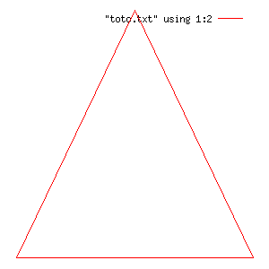
|
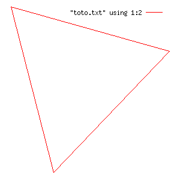
|
Tracez maintenant la maison de gauche en utilisant votre tortue. La maison de droite est-elle facile à tracer ? Quelle ruse ai-je employée ?
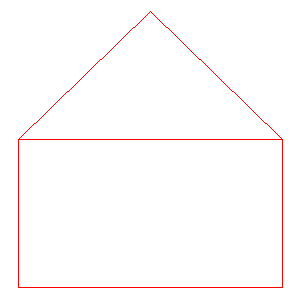
|
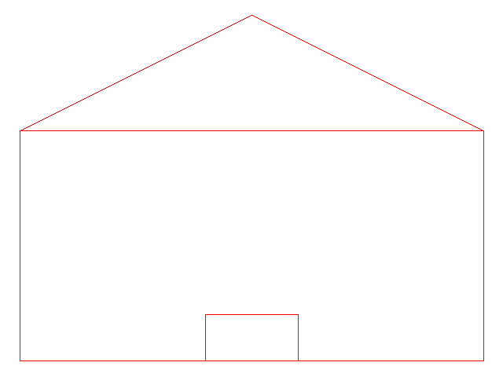
|
On va utiliser la récursivité pour tracer de jolies choses. Le plus simple et le plus connu est le flocon de Koch.
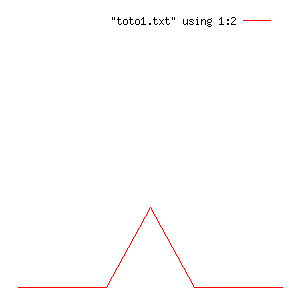
|
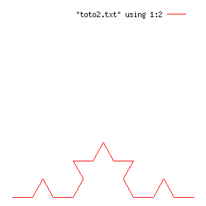
|
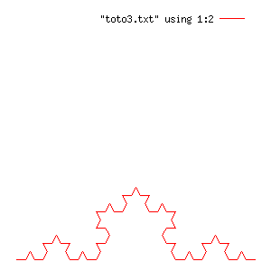
|
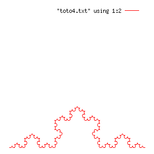
|
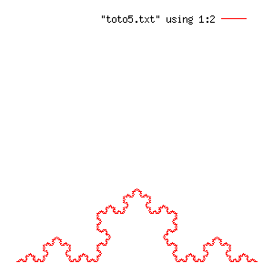
|
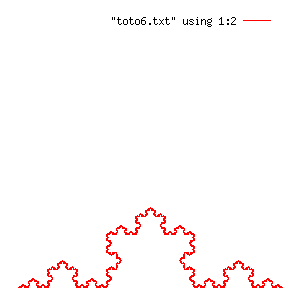
|
En fait, on s'aperçoit qu'on remplace à chaque fois une ligne droite par le même motif mais réduit à 1/3. En quelque sorte, le premier motif est un segment de longueur 10 (par exemple). Ce segment est découpé en quatre segments de longueur 10/3, eux-mêmes sont encore coupés en 4 segments de longueur 10/3/3, etc.
On écrit la fonction suivante
Vérifier que ce code trace bien le premier niveau de Koch. On voit bien qu'il y a 4 segments de longueur d/3. Mais comment lui faire répéter le processus ?
En fait, on s'aperçoit qu'on doit remplacer les avance par un flocon de Koch. Pour le faire, il suffit donc d'appeler koch en lieu et place de avance.
Bien sûr, il faut s'arrêter à un moment. On se donne donc un k initial (ici entre 1 et 6). Puis à chaque fois que l'on rappelle koch, on lui enlève 1. Le paramètre k va finir par valoir 0. Dans ce cas, et dans ce cas seulement, on trace simplement le segment par un simple appel à avance. Modifiez donc le code précédent pour faire tout ça. On note qu'il s'agit bien de récursivité, car la fonction s'appelle elle-même.
On peut très facilement trouver d'autres courbes dans l'esprit du flocon de Koch. On réfère le lecteur à [http://fr.wikipedia.org/wiki/Flocon_de_koch].
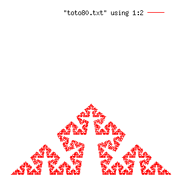
|
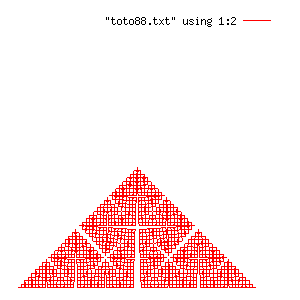
|
On considère le programme ci-dessous. On note que son objectif est d'afficher les 100 caractères à partir de l'adresse de la variable locale t.
A l'exécution, on remarque que l'on retrouve la valeur 64 dans le premier octet affiché, puis on distingue le tableau de caractères nom_local "Bonjour Toto". Ce qui est plus surprenant, c'est qu'on distingue la variable nom1 définie dans la fonction main. C'est étonnant car elle est normalement inaccessible d'une autre fonction. Cela vous montre le mécanisme de pile d'exécution utilisé par les programmes C pour allouer/désallouer les variables locales.
Récupérez maintenant le fichier voir-pile2.c, très similaire au précédent sauf qu'il affiche les caractères les uns à la suite des autres et non ligne par ligne.
Compilez, exécutez-le. Premièrement, il fait une erreur à l'exécution: la fameuse "erreur de segmentation". En fait, ce programme tente de lire en dehors dela mémoire allouée à ce processus. Rien de surprenant, il tente de lire 10000 octets au-dessus de votre variable locale. Deuxièmement, on voit "Bonjour Toto", "Bonjour Tutu" mais jamais "Bonjour Tata", ce qui montre les constantes textes sont sauvegardées ailleurs. Enfin, il affiche toutes les variables d'environnement de votre shell, plus les paramètres données en ligne de commande.
Par exemple, voilà ce que l'on obtient:
[you] ./voir-pile2 "J'adore INFO523" "Ceci n'est pas une méthode subliminale" 3.14159625
@Bonjour Toto�]�E␄���B��@��s*�
@Bonjour Tutu༿B��]�E␄�M�t*�輿B�␄�@�9�@�S��@@s�9�␘I�s�0@輿B�␄@@༿B�i@ؼ�B�␜␄�ſB��ſB��ſB�␛ƿB�&ƿB�IƿB�\ƿB�gƿB�wƿB��ƿB��ƿB�␃ǿB�#ǿB�0ǿB��˿B��˿B�)̿B�}̿B��B��̿B��̿B�/ͿB�cͿB�~ͿB��B��ͿB��ͿB��ͿB��ͿB�␒οB�␚οB�-οB�YοB�iοB��οB�ϿB�(ϿB�5ϿB�WϿB��ϿB��ϿB��ϿB�!��B�␐����␐␑d␃@@␄8 ��*� @
t$
t$t$␗␙y��B�␟�ϿB����B��]�E␄�1k ЩyF��x86_64./voir-pile2J'adore INFO523Ceci n'est pas une méthode subliminale3.14159625ORBIT_SOCKETDIR=/tmp/orbit-lachaudSSH_AGENT_PID=2290TERM=xtermSHELL=/bin/bashXDG_SESSION_COOKIE=0c39205e673ea33abf7a50734b01422a-1313149062.947966-206217221WINDOWID=77747177GNOME_KEYRING_CONTROL=/tmp/keyring-GJ0q1cGTK_MODULES=canberra-gtk-moduleUSER=lachaudLS_COLORS=rs=0:di=01;34:ln=01;36:hl=44;37:pi=40;33:so=01;35:do=01;35:bd=40;33;01:cd=40;33;01:or=40;31;01:su=37;41:sg=30;43:ca=30;41:tw=30;42:ow=34;42:st=37;44:ex=01;32:*.tar=01;31:*.tgz=01;31:*.arj=01;31:*.taz=01;31:*.lzh=01;31:*.lzma=01;31:*.zip=01;31:*.z=01;31:*.Z=01;31:*.dz=01;31:*.gz=01;31:*.bz2=01;31:*.bz=01;31:*.tbz2=01;31:*.tz=01;31:*.deb=01;31:*.rpm=01;31:*.jar=01;31:*.rar=01;31:*.ace=01;31:*.zoo=01;31:*.cpio=01;31:*.7z=01;31:*.rz=01;31:*.jpg=01;35:*.jpeg=01;35:*.gif=01;35:*.bmp=01;35:*.pbm=01;35:*.pgm=01;35:*.ppm=01;35:*.tga=01;35:*.xbm=01;35:*.xpm=01;35:*.tif=01;35:*.tiff=01;35:*.png=01;35:*.svg=01;35:*.svgz=01;35:*.mng=01;35:*.pcx=01;35:*.mov=01;35:*.mpg=01;35:*.mpeg=01;35:*.m2v=01;35:*.mkv=01;35:*.ogm=01;35:*.mp4=01;35:*.m4v=01;35:*.mp4v=01;35:*.vob=01;35:*.qt=01;35:*.nuv=01;35:*.wmv=01;35:*.asf=01;35:*.rm=01;35:*.rmvb=01;35:*.flc=01;35:*.avi=01;35:*.fli=01;35:*.flv=01;35:*.gl=01;35:*.dl=01;35:*.xcf=01;35:*.xwd=01;35:*.yuv=01;35:*.axv=01;35:*.anx=01;35:*.ogv=01;35:*.ogx=01;35:*.aac=00;36:*.au=00;36:*.flac=00;36:*.mid=00;36:*.midi=00;36:*.mka=00;36:*.mp3=00;36:*.mpc=00;36:*.ogg=00;36:*.ra=00;36:*.wav=00;36:*.axa=00;36:*.oga=00;36:*.spx=00;36:*.xspf=00;36:SSH_AUTH_SOCK=/tmp/keyring-GJ0q1c/sshDEFAULTS_PATH=/usr/share/gconf/gnome.default.pathSESSION_MANAGER=local/imagine:@/tmp/.ICE-unix/2256,unix/imagine:/tmp/.ICE-unix/2256USERNAME=lachaudXDG_CONFIG_DIRS=/etc/xdg/xdg-gnome:/etc/xdgDESKTOP_SESSION=gnomePATH=/home/lachaud/bin:/usr/local/sbin:/usr/local/bin:/usr/sbin:/usr/bin:/sbin:/bin:/usr/gamesPWD=/home/lachaud/Cours/2011-2012/INFO523/Tests/TP1GDM_KEYBOARD_LAYOUT=fr macLANG=fr_FR.utf8GNOME_KEYRING_PID=2238MANDATORY_PATH=/usr/share/gconf/gnome.mandatory.pathGDM_LANG=fr_FR.utf8GDMSESSION=gnomeSPEECHD_PORT=15892SHLVL=1HOME=/home/lachaudGNOME_DESKTOP_SESSION_ID=this-is-deprecatedLOGNAME=lachaudXDG_DATA_DIRS=/usr/share/gnome:/usr/local/share/:/usr/share/DBUS_SESSION_BUS_ADDRESS=unix:abstract=/tmp/dbus-uxIR0vnSsg,guid=5af7a10fd498543d804b80614e451087LESSOPEN=| /usr/bin/lesspipe %sDISPLAY=:0.0LESSCLOSE=/usr/bin/lesspipe %s %sXAUTHORITY=/var/run/gdm/auth-for-lachaud-LP0bBr/databaseCOLORTERM=gnome-terminal_=./voir-pile2OLDPWD=/home/lachaud/Cours/2011-2012/INFO523/Tests./voir-pile2Erreur de segmentation
Plein de caractères sont illisibles, mais on reconnaît les paramètres passés sur la ligne de commande et l'environnement. En réalité, l'entrée main d'un programme C s'écrit:
Le programme fait une erreur de segmentation. Pour voir où, tapez
[you] ddd ./voir-pile2 # ou gdb, xxgdb
qui est un debuggeur. Cliquez sur 'run'. Il doit bloquer sur une ligne qu'il affiche. Passez la souris sur les variables : il affiche leur valeur. Vous savez donc à quel moment votre programme sort de sa zone mémoire. Avec ce debuggeur, vous pouvez exécutez des instructions pas à pas (via next/step), mettre un point d'arrêt (set breakpoint), etc.
On veut afficher dans la console une fonction, donnée comme une chaîne de caractères (où '0' vaut 0, '1' vaut 1, ..., 'a' vaut 10, 'b' vaut 11, ...). On souhaite d'abord l'afficher sous forme d'histogramme. Par exemple, en tapant
[you] ./histogramme 0013332221100235864331011122334
donne
#
#
##
###
#### #
### ####### ###
###### ######## #####
######### ######### ########
0013332221100235864331011122334
Le plus simple est d'écrire quelques fonctions intermédiaires
int convert( char* str, char* data ) qui convertit la chaîne de caractères str en les entiers correspondants et les place dans data.int max( int* data, int n ) et int min( int* data, int n ) qui parcourt le tableau d'entiers sur n valeurs pour calculer leur minimum et maximumvoid affiche_histogramme( int* data, int n ) qui réalise l'affichage ci-dessus, en appelant notamment les fonctions min et max pour déterminer le nombre de lignes à afficher.Dans un deuxième temps, on souhaite afficher cette même fonction, , donnée comme une chaîne de caractères (où '0' vaut 0, '1' vaut 1, ..., 'a' vaut 10, 'b' vaut 11, ...), sous forme d'un tracé de "courbe". Ainsi, pour la même entrée:
[you] ./courbe 0013332221100235864331011122334
donne
.
|
|\
/ |
| \ _
___ / \_ _/
| \__ / | _/
/ \_ | \ __/
_/ \/ v
0013332221100235864331011122334
Un exemple plus compliqué est la fonction cos( sqrt(8*x) ) * (2+sqrt(x)) pour x entre 0 et 80. Cela donne
___
/
____ /
/ \ /
___ / \ |
/ \ | \ /
. | | / | /
/ \ / \ / \ |
_ | | | | | \ /
| | \ / \ / | /
| / \ / \ / \ /
| | | | \ | \ |
\/ \ / | / | /
| | \ | \ |
\ / | / \ /
\/ \ / | /
\ / \ /
\_/ \ |
\ _/
\__/Ecrivez ce programme, en adaptant la fonction précédente affiche_histogramme. Il faudra regarder les valeurs précédentes et suivantes pour déterminer le symbole courant à afficher.
On va représenter un terrain (avec des altitudes) sous forme d'une grille hexagonale. En fait on peut encore utiliser un tableau à deux dimensions:
L'idée est de décaler d'une moitié de case (symboliquement) une ligne sur deux. Voilà du coup où sont placés les cases les unes par rapport aux autres (chaque case interne a donc six voisins):
+---------+---------+---------+---------+----
| T[0][0] | T[0][1] | T[0][2] | T[0][3] | ...
+----+----+----+----+----+----+----+----+----+
| T[1][0] | T[1][1] | T[1][2] | T[1][3] | ...
+---------+---------+---------+---------+----+
| T[2][0] | T[2][1] | T[2][2] | T[2][3] | ...
+----+----+----+----+----+----+----+----+----+
| ... | ... | ... | ... |
On va représenter l'altitude d'une case par un entier (<0: sous la mer, >= 0 plage/plaine/foret/montagne. On affichera une case sous forme de deux espaces colorés avec la fonction suivante :
Ensuite on peut initialiser la grille avec des altitudes aléatoires. La fonction ci-dessous fait que le coin haut gauche est plus haut que le coin bas droit (ça fera de la montagne et de la mer ensuite).
Ecrivez maintenant une fonction grille_affiche(Grille G) qui affiche la grille donnée en paramètre, en décalant d'un espace les lignes impaires. Cela donne
Malheureusement le terrain obtenu est beaucoup trop accidenté pour être réaliste. Il faut le transformer avec des fonctions qui agissent sur une case et son voisinage.
On commence par définir des structures Case et Voisinage ainsi
Il faut ensuite définir une fonction pour tester si une case est valide (i.e. dans la grille MxN), puis des fonctions pour retourner chaque voisin, et enfin la fonction qui retourne tous les voisins.
Une fois ceci fait, on écrit une fonction void arase( Grille G,
Case c ) dont l'objectif est de modifier l'altitude d'une case de telle manière à ce qu'elle soit égale à la moyenne des altitudes des voisins.
Ensuite dans le programme principale, on va araser pas mal de sommets aléatoirement ainsi:
Le résultat est déjà beaucoup plus joli !
On peut enfin écrire des fonctions pour creuser ou remblayer du terrain
Une fois ceci fait, on peut creuser et remblayer quelques milliers de cases ainsi:
Voilà le type de résultats que vous pouvez obtenir.
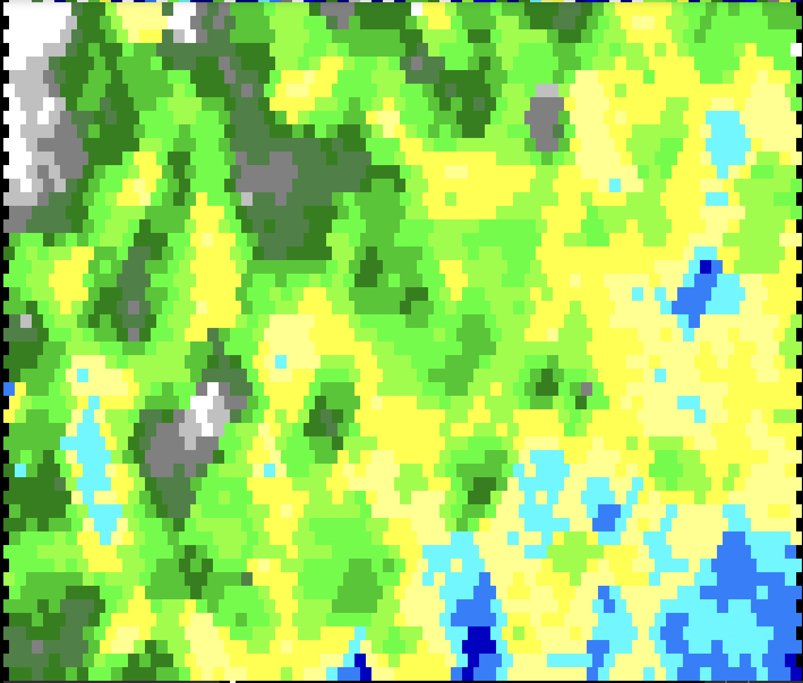
|
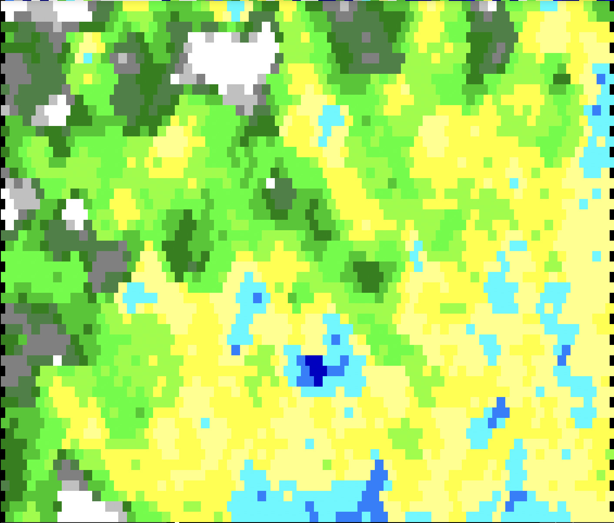
|
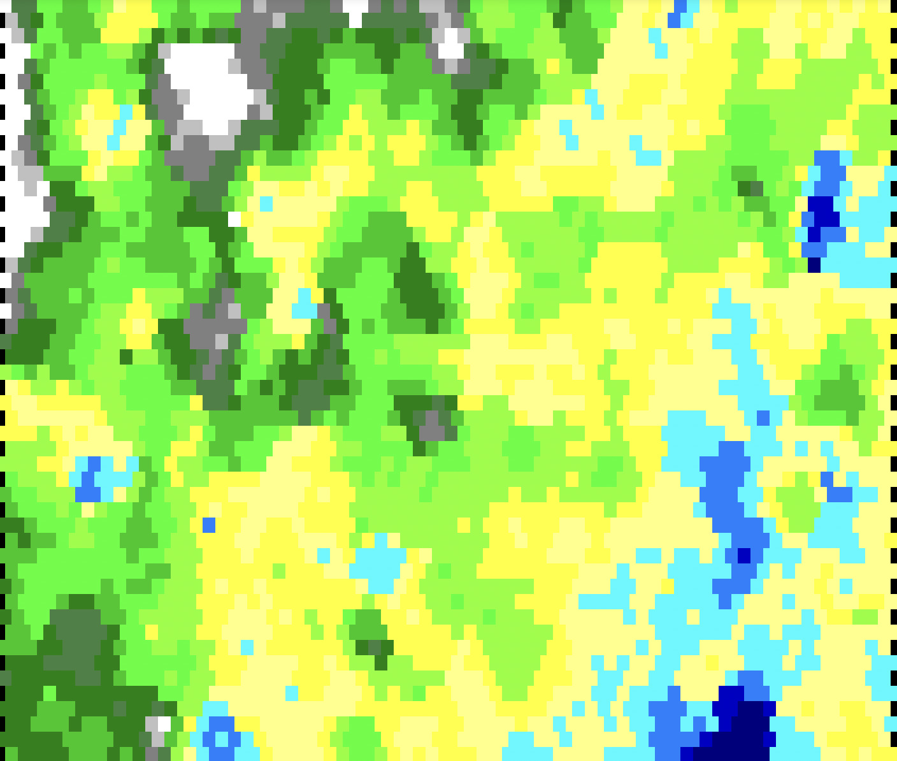
|
Une fois ceci fait, on peut s'amuser à faire des rivières qui partent d'un endroit aléatoire et se déplace vers leur voisin le plus bas jusqu'à arriver à la mer. On réserve alors une altitude spéciale pour les rivières pour les afficher différemment.
On pourrait s'amuser à tracer des rivières en récursif en descendant les plus grandes pentes, simuler de l'érosion, etc.
A l'issue de ce TP, vous devez avoir assimilé les points suivants :
gnuplot pour faire des tracés,*, ->, et &,